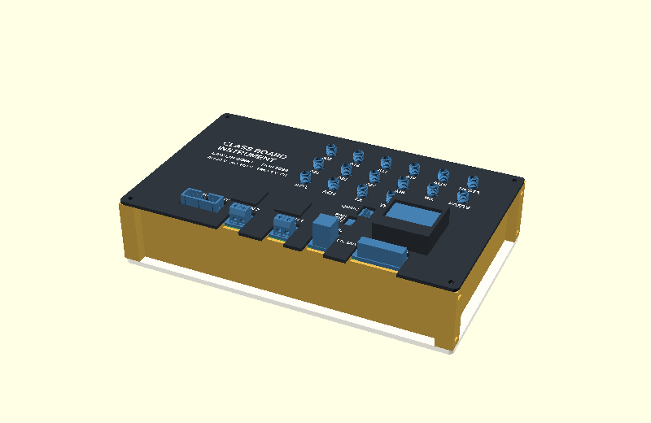
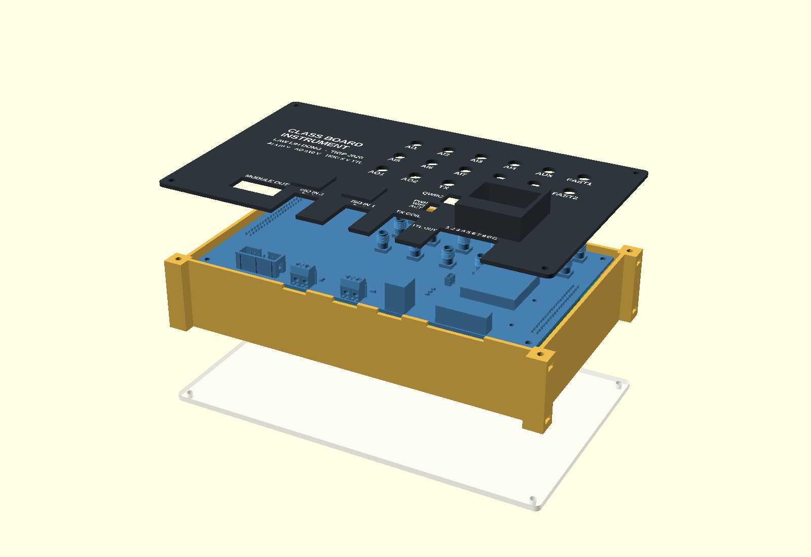
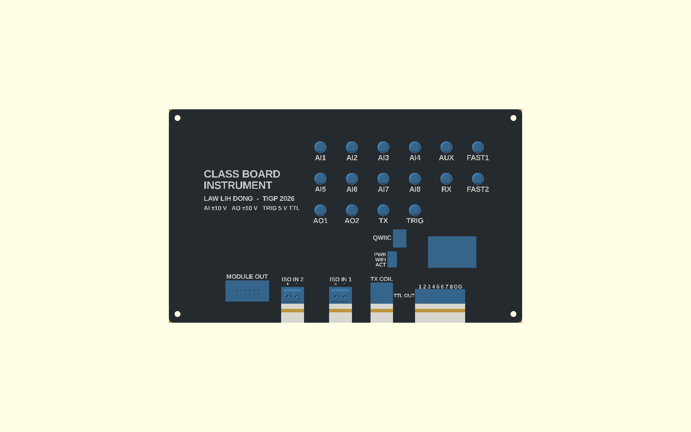
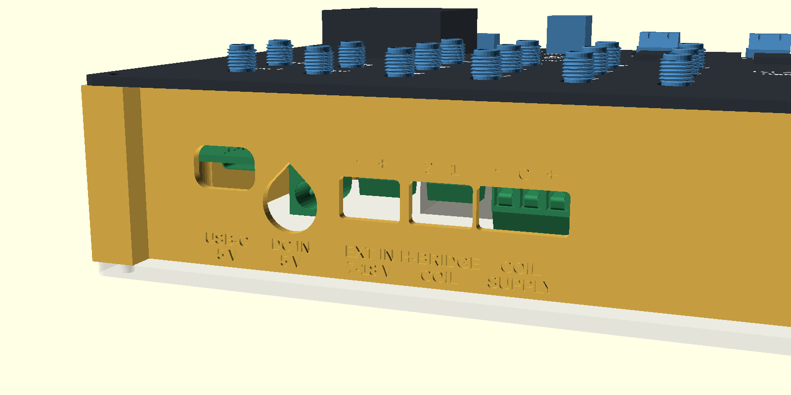
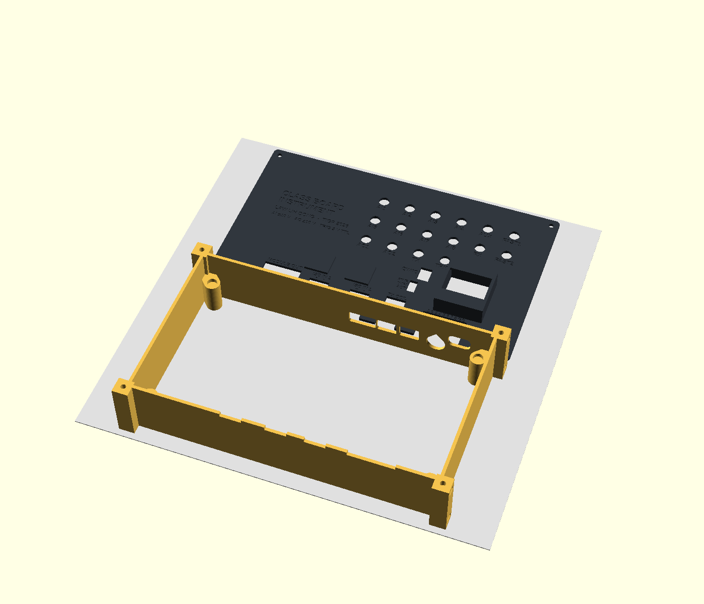
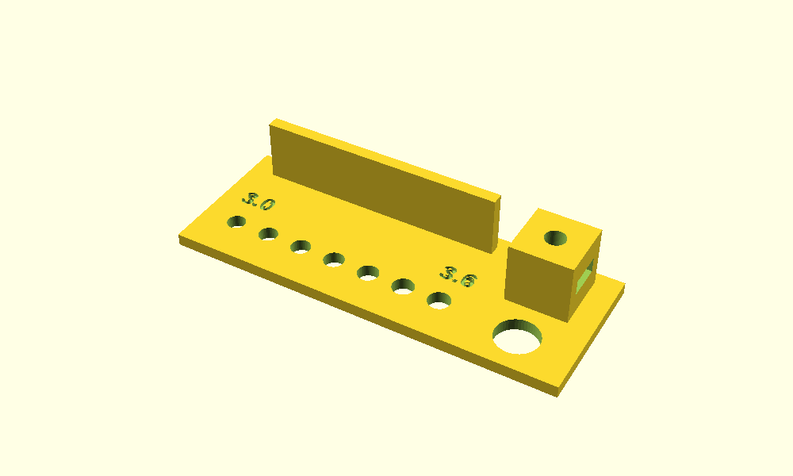

The board
The class board is the shared platform we designed together in Workshop 2: two 180 × 100 mm boards stacked 11 mm apart. The front panel is the face of the instrument, with sixteen SMA jacks (AI1–AI8, AO1–AO2, TRIG, AUX, FAST1–2, TX, RX), an OLED, three status LEDs, a Qwiic socket, a module header and four screw terminals on its front edge. The main board underneath carries the circuitry; its rear edge has USB-C, a 5 V DC jack, the 7–18 V external input and the coil terminals. The ESP32-S3 dev board plugs in below it.
The housing

Every dimension comes from the KiCad files and the board meshes, not from a ruler. Three parts and a lid:
| Part | What it does | Made by |
|---|---|---|
| Base | Four 2 mm walls, corner posts with M3 nut pockets that open to the side, four columns the board stack rests on (its screw heads locate it), rear openings sized for the plugs, engraved names | 3D print, no supports |
| Cover | Sits 2.2 mm above the panel, just over the SMA hex bases, so the plug nuts reach the thread. A hood holds the OLED 14 mm up; two bumps clear the optocouplers; everything else is solid plastic over the solder tails | 3D print face up, no supports |
| Label inlay | Optional white fill for the engraved labels, printed as a second colour | 3D print (AMS) |
| Lid | Clear bottom; four screws and it comes off to reach the dev board's RESET and BOOT | Laser cut, 3 mm acrylic |
Putting it together:
- Stack the boards on four M3 × 11 stand-offs with eight M3 × 6 screws.
- Drop the stack into the base; the main board's screw heads sit in the column tops.
- Slide four M3 nuts into the upper pockets of the posts and screw the cover on (M3 × 10).
- Four nuts into the lower pockets, and the lid goes on the same way.
Labels


Files
One parametric OpenSCAD file makes every part. GitHub shows the STL files in a 3D viewer.
| File | What it is |
|---|---|
| housing.scad | The model (OpenSCAD 2021.01). part picks
assembly, section, plate, base, cover, labels, lid or coupon; the console prints the numbers to check |
| base.stl | Base, as it goes on the bed |
| cover.stl + cover_labels.stl | Cover, face up; the labels file is the optional white inlay |
| coupon.stl | Test print: holes 3.0–3.6 mm, an SMA thread hole, a nut pocket, a 2 mm wall |
| lid.dxf | Bottom lid for the laser cutter |
| tools/ | The scripts that render the pictures on this page |
The model reads the board meshes from the class repository by relative path. To open it with the
boards in place, use the copy in class-board-2026/docs/students/lihdong/housing/.
Printing


Status, 8 October 2026: designed and exported, not printed yet. Next: the firmware and the phone app that make the board an instrument, and photos of the real thing in its housing.